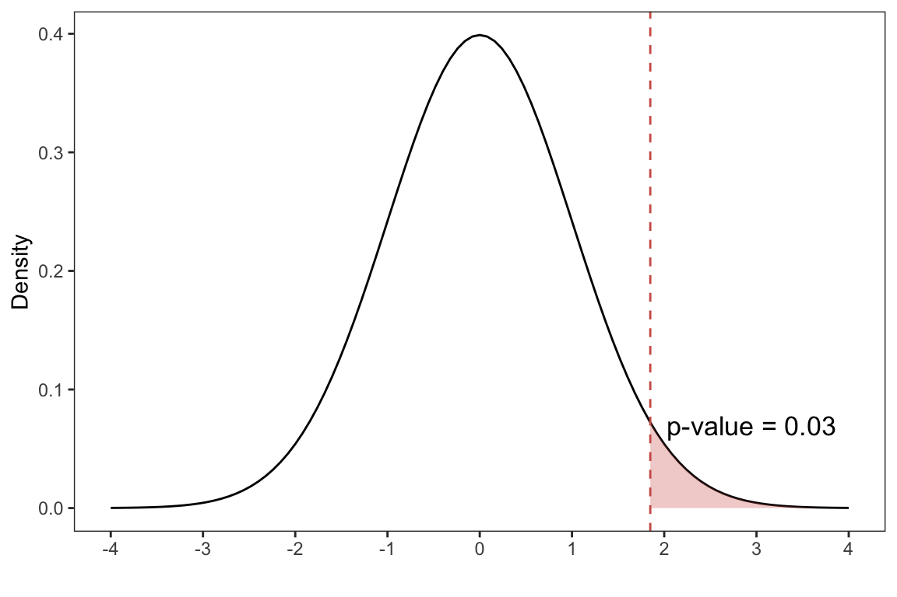

flint <- read.csv(file="/Users/toledo60/Desktop/Projects/personal-website/data/flint.csv")Overview of Hypothesis Testing
A hypothesis test is a statistical technique used to evaluate competing claims using data. In hypothesis testing, we want to test two competing claims during an investigation. These two claims are known as null hypothesis and alternative hypothesis. Both of these claims then offer competing answers to our proposed research hypothesis
The null hypothesis \(H_0\), assumes there is no significant difference or relationship between two variables being tested. It is used in hypothesis testing to determine if an observed result is statistically significant or simply due to chance
The alternative hypothesis \(H_a\), contradicts the null hypothesis and suggests that there is a significant difference or relationship between the variables being tested. It is used in hypothesis testing to determine if there is evidence to support a particular research hypothesis
Inference Procedure
Here are some general steps to performing an inference procedure
- Identify the population of interest and create a research hypothesis about the population
- Define the parameters of interest and state your null and alternative hypotheses. Specify a significance level \(\alpha\) before carrying out the test
- Gather a suitable sample for testing our hypothesis, and obtain the corresponding statistic
- Construct a sampling distribution under the null hypothesis and check the validity conditions to apply the Central Limit Theorem
- If the validity conditions hold, carry out the hypothesis test and obtain the \(p\)-value
- In the context of the investigation, make a conclusion by comparing the \(p\)-value to our significance level
We carry out this procedure in the following scenario using the flint dataset in our class website
Below is a preview of flint alongside its dimensions
head(flint)#> Latitude Longitude Pb Cu Region
#> 1 43.09414 -83.60974 0 0 North
#> 2 43.09054 -83.70344 1 130 North
#> 3 43.08601 -83.71996 16 170 North
#> 4 43.08100 -83.75415 0 0 North
#> 5 43.07435 -83.70043 2 0 North
#> 6 43.07399 -83.71788 0 0 Northdim(flint)#> [1] 541 5It is a dataset with 541 observations and 5 variables
Based on the flint dataset, Lead levels are considered dangerous if the result was greater than or equal to 15PPB. We are interested in determining if the proportion of dangerous lead levels in Flint is greater than \(10\%\). Assume the Flint data is a random sample used to address this research question
Identify the population of interest and create a research hypothesis about the population
The population of interest is the lead levels in flint. We are interested in determining if the proportion of dangerous lead levels (lead levels greater than or equal to 15PPB) in Flint is greater than \(10\%\)
Define the parameters of interest and state your null and alternative hypotheses. Specify a significance level \(\alpha\) before carrying out the test
Denoting the population proportion with the symbol \(\pi\)
Our parameter of interest \(\pi\), is proportion of dangerous lead levels (lead levels greater than or equal to 15PPB) in Flint
We construct the following one-sided test
\[ \begin{align*} H_0: \pi &= 0.1 \\ H_a: \pi &> 0.1 \end{align*} \] We are interested in testing whether or not the proportion of dangerous lead levels is greater than \(10\%\) (this is our alternative hypothesis). We perform this hypothesis test at the \(\alpha =0.05\) significance level
alpha <- 0.05
Gather a suitable sample for testing our hypothesis, and obtain the corresponding statistic
We assume the flint data is a random sample used to test our hypothesis
n <- nrow(flint)
dangerous_lead <- (flint$Pb >= 15)
p_hat <- mean(dangerous_lead)Based on our random sample, the sample proportion of lead levels in flint that are greater than or equal to 15PPB (dangerous lead levels) is
p_hat#> [1] 0.1238447This will be our test statistic
Construct a sampling distribution under the null hypothesis and check the validity conditions to apply the Central Limit Theorem
Given that there
n * p_hat # number of successes#> [1] 67n * (1-p_hat) # number of failures#> [1] 474at least 10 successes and 10 failures we can approximate the sampling distribution with a normal distribution.
Under the null hypothesis, we standardize our test statistic
\[ z = \frac{\hat{p} - \pi}{ \sqrt{\frac{\pi (1-\pi)}{n} }} \]
where \(\pi\) is the null hypothesized value and \(\hat{p}\) is our sample proportion. This is known as the \(z\)-score. The \(z\)-score represents the number of standard errors that the sample proportion is from the population proportion
p_null <- 0.10
se_null <- sqrt(p_null*(1-p_null)/n)
test_stat <- (p_hat-p_null)/se_nullOur test statistic is then
test_stat#> [1] 1.848714If the validity conditions hold, carry out the hypothesis test and obtain the \(p\)-value
The \(p\)-value is defined as the probability of observing a test statistic giving us “as much or more evidence in favor of the alternative hypothesis” assuming the null distribution is true
That is we shade the region in whichever direction the alternative hypothesis is testing. In our case we are interested in values that are bigger than our equal \(10\%\) of dangerous lead proportion in Flint
p_value <- pnorm(test_stat,sd=1,mean=0, lower.tail = FALSE)p_value#> [1] 0.03224953Show Code
This code is not required for your lab, and is only used for teaching demonstration
library(ggplot2)
library(patchwork)theme_set(theme_bw())
theme_replace(panel.grid.minor = element_blank(),
panel.grid.major = element_blank())x_limits <- c(-4,4)
p1 <- ggplot(data.frame(x = x_limits), aes(x)) +
stat_function(fun = dnorm,
geom = "line",
xlim = x_limits) +
stat_function(fun = dnorm,
geom = "area",
fill = '#cf5d55',
alpha =0.3,
xlim = c(test_stat, 4))+
geom_vline(xintercept = test_stat,linetype=2,color = '#cf5d55')+
labs(x = '',y= 'Density')+
annotate("text", x = test_stat+1.1, y = 0.07,
label = paste0('p-value = ',round(p_value,2)),
size=4.5)+
scale_x_continuous(name = '',limits = x_limits,
breaks = -4:4)
In the context of the investigation, make a conclusion by comparing the \(p\)-value to our significance level
We can make the following decisions in a hypothesis test
- If \(p\)-value \(\leq \alpha\): reject the null hypothesis
- If \(p\)-value \(> \alpha\): fail to reject the null hypothesis
p_value < alpha#> [1] TRUESince our \(p\)-value is less than our significance level,we have sufficient evidence to reject the null hypothesis in favor of the alternative hypothesis. That is, we can claim the proportion of dangerous lead levels in Flint is greater than \(10\%\)
While the above process can be tedious,it can easily be performed with a single command in R :)
n_successes <- sum(dangerous_lead)
prop.test(x = n_successes,n = n,p = 0.10,
alternative = 'greater',conf.level = 0.95,
correct = FALSE)#>
#> 1-sample proportions test without continuity correction
#>
#> data: n_successes out of n, null probability 0.1
#> X-squared = 3.4177, df = 1, p-value = 0.03225
#> alternative hypothesis: true p is greater than 0.1
#> 95 percent confidence interval:
#> 0.1024045 1.0000000
#> sample estimates:
#> p
#> 0.1238447For further details on prop.test, see ?prop.test